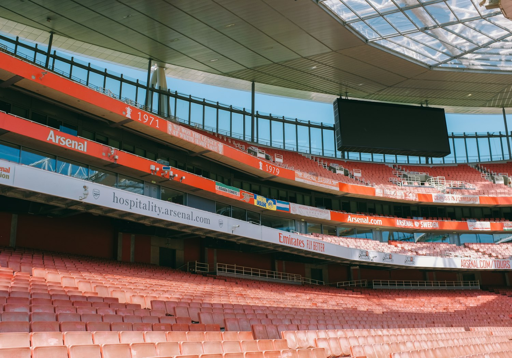
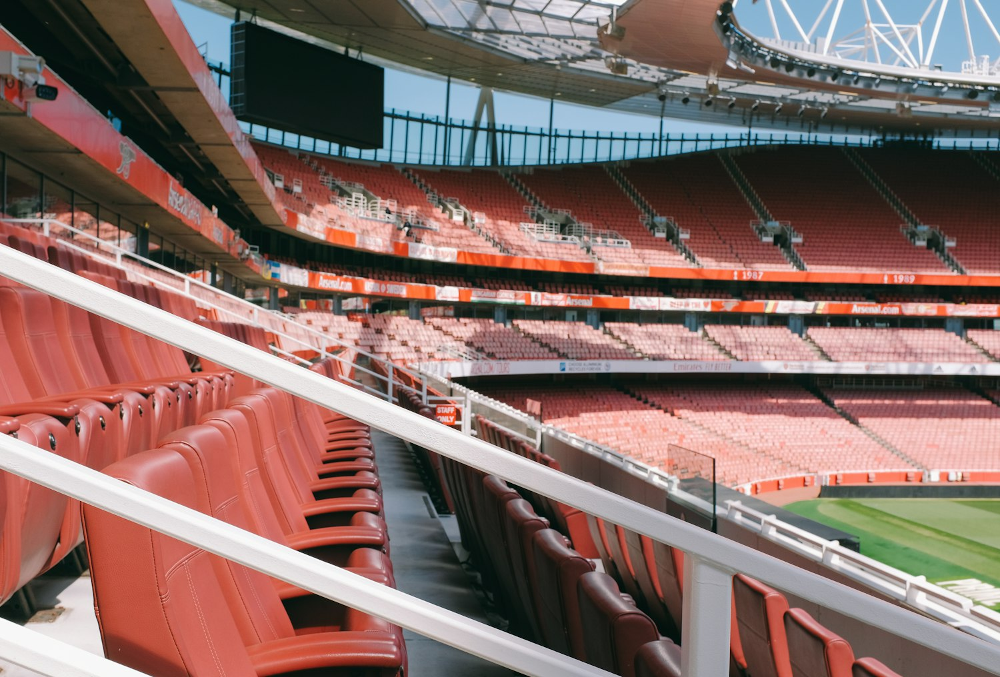

最终积分

The wait
冠军不是烟花，是二十二年后重新站稳的姿态。
阿森纳这个冠军，漂亮不在于突然爆炸，而在于终于不再失控。过去几个赛季，他们已经足够接近，却总被最后的压力提醒还差一点。
2025/26 赛季，他们把那一点补上了。曼城在第 37 轮被伯恩茅斯逼平后，阿森纳提前锁定英超冠军。最后一轮，球队客场 2-1 击败水晶宫，以 85 分收官，领先第二名曼城 7 分。
领先曼城
等待年数
Raya 零封场次
The craft
这一次，阿森纳赢在更安静的地方。
中卫提前半步，门将多守住一次远角，边锋多完成一次回追，前腰把第一道压迫做完。冠军不是靠一晚的狂热，而是靠这些动作被重复到五月。

防守成为底色
Gabriel、Saliba 和 David Raya 让球队敢于把阵线推高，也敢于在领先后把比赛变窄。
压力成为技术
争冠后段，真正的能力不是踢得更热闹，而是在所有人变急的时候仍然按计划踢球。
时代重新命名
这批人不再只是接近冠军的一代。他们以后会被更简单地称呼：冠军一代。
接近
连续争冠失手，把年轻球队的浪漫磨成了更硬的纪律。
确认
曼城战平伯恩茅斯，阿森纳提前赢得 2025/26 英超冠军。
捧杯
最后一轮客胜水晶宫，奖杯在客场举起，等待在五月落地。
最动人的地方，是这个冠军并没有试图复制 2003/04 的不败神话。那支球队属于另一个时代，属于一套几乎无法再被重演的足球浪漫。2025/26 的阿森纳更像现代英超里的精密作品：更重视空间，更重视风险，更重视每一次球权转换后的站位。
Saka 仍然让右路带着决定比赛的重量，Odegaard 仍然用转身和压迫管理节奏，Rice 让中场更有承重感，后场则把安全感变成整队的底气。真正的冠军，不只靠一两名球员的光，而是靠每条线都知道自己在什么时刻该做什么。
对球迷来说，这也是一次身份更新。过去很多年，阿森纳的故事总绕不开“差一点”。差一点顶住，差一点补强，差一点熬过伤病，差一点赢下关键战。现在不用再绕。这个赛季可以被一句话收束：阿森纳是英超冠军。
Sources
来源与边界
本页是非官方球迷纪念页面，不隶属于 Arsenal Football Club 或 Premier League。视觉照片来自 Huy Phan 的公开 Unsplash 摄影素材。